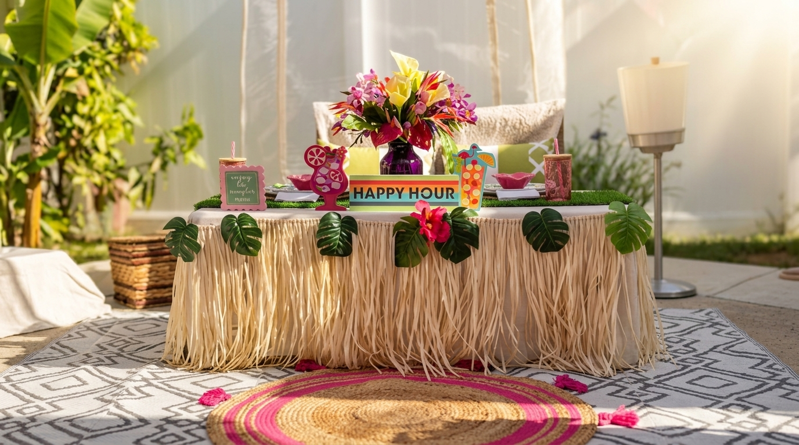

Long Island · Event Styling
Event styling for weddings, showers, birthdays, corporate gatherings, and luxury picnics. We design the look, set it up, and break it down so you get to be a guest at your own event.
Plan your event →Recent event · May 2026
Sarah's only ask was "make it look like the Pinterest board I've been saving for two years." Low cedar table, pampas grass, taper candles, dried floral garland, vintage rugs underfoot. The whole setup landed in 90 minutes. James proposed before the candles even lit.
See more events →
How it works
01
Send a quick inquiry — event type, date, venue, vibe, rough guest count, budget range. The more honest you are about the budget the better we can match the look.
02
Within a few days we send a mood board, a written concept, and a clear quote. No surprises, no "and that'll be extra" moments. You either love it or we tweak it.
03
The day of, we arrive early, set everything up, double-check every detail, and come back to break it down so you don't touch a thing. You stay in the moment.
"She styled my mom's 60th birthday in early May. Tablescape, florals, the small details — all of it thought through. Mom kept showing the photos to people for weeks after."
Tim Murphy · Owner's nephew · Mom's 60th · May 2026
Inquire
The more detail you can share, the better the proposal we can come back with. We usually reply within one business day.